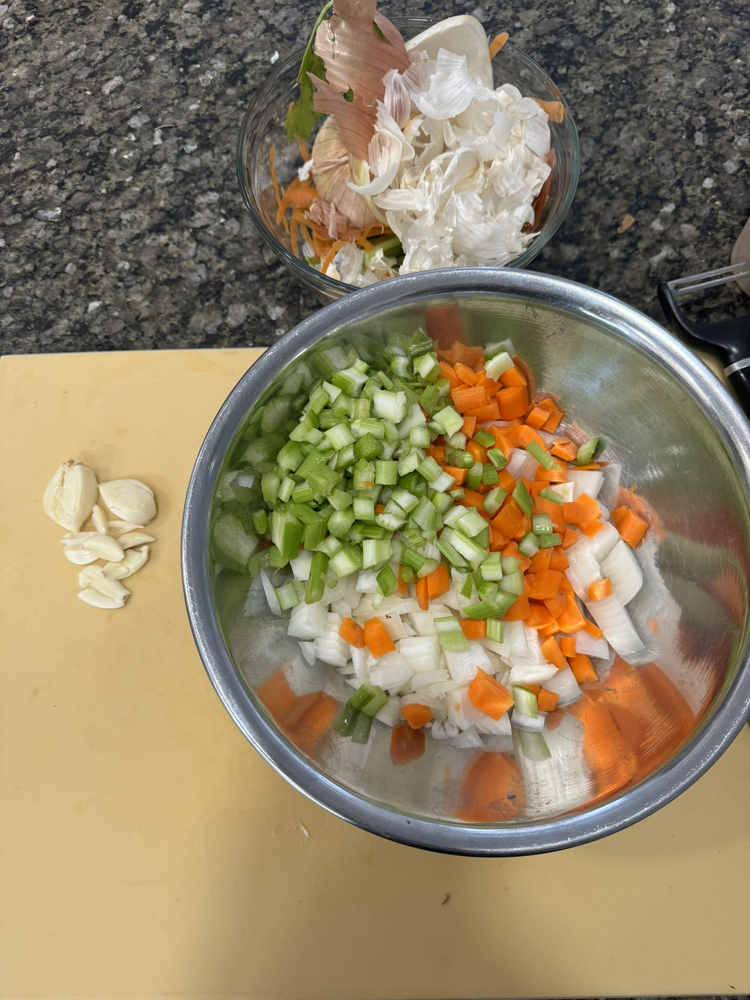
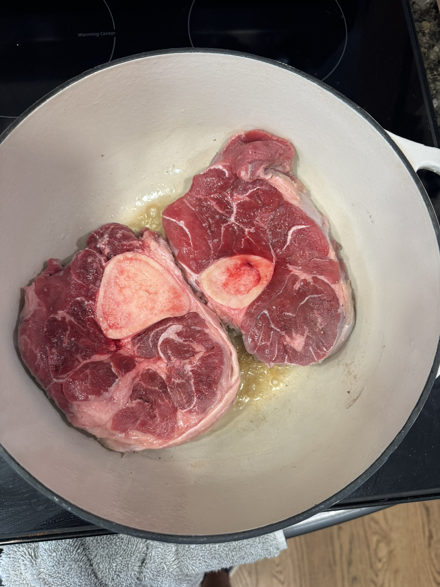
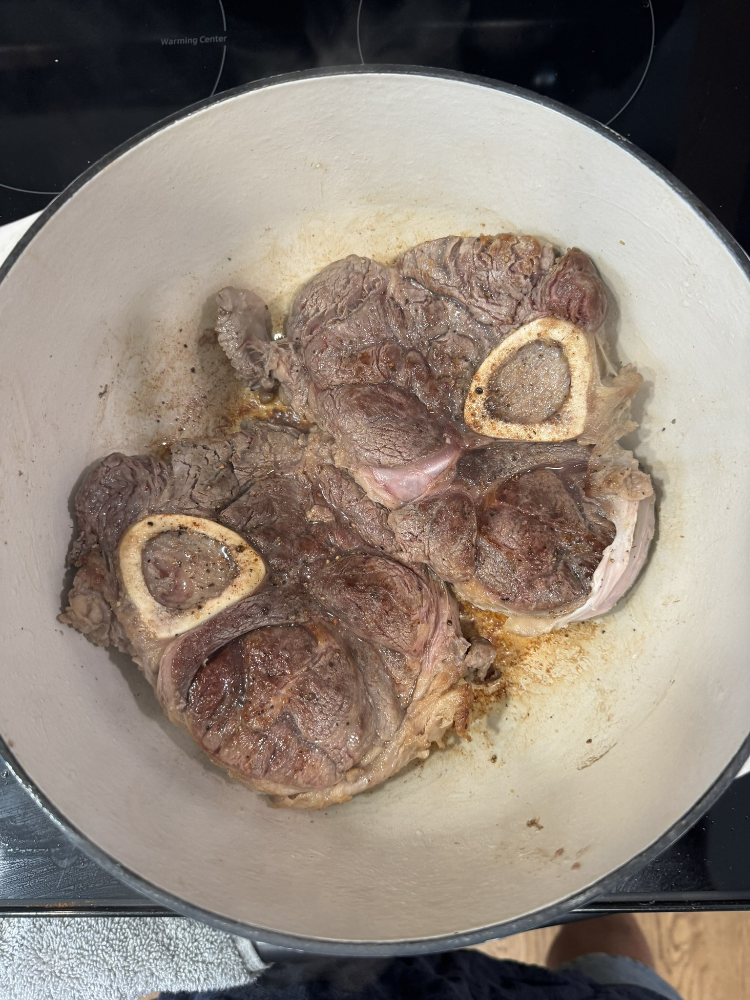
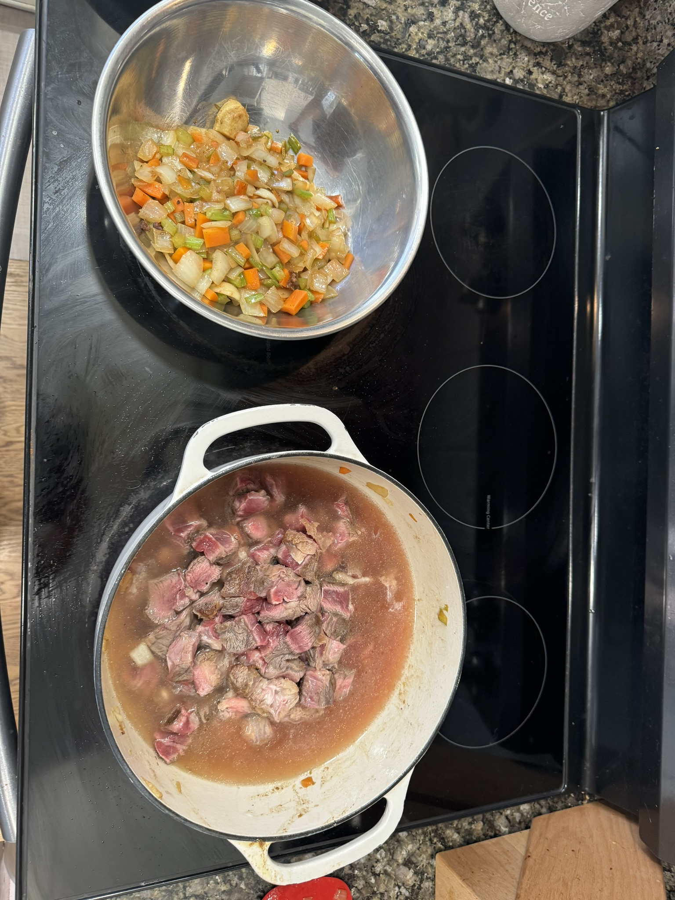

After a rough bout of food poisoning in Mexico, I needed something that would both comfort my soul and rebuild my decimated gut microbiome. Enter: the ultimate beef and barley stew. My go-to meal prep that's basically a hug in a pot.
This time, I switched things up. The beef section at the store looked sadder than my post-Mexico stomach - short ribs and chuck roast were looking low-quality and expensive as hell. Solution? Beef shank. Game changer.
Cooking Strategy
Here's the pro move: sear the beef whole first. This creates an insane fond and lets you control the browning on these thicker cuts. Beef shank's got mad intramuscular fat that needs to render out slowly. No rush, we're making magic happen.
Ingredients
- Beef shank
- Barley
- Chicken stock
- Mirepoix (onions, carrots, celery)
- Garlic
- Herbs (thyme, bay leaf)
- Salt and pepper
Cooking Process
- Sear beef whole
- Chop into cubes
- Sauté mirepoix
- Simmer/broil beef in chicken stock (1.5 hours)
- Return vegetables and barley
- Simmer additional 30 minutes
Bonus round: those beef shanks? Throw the bones in the oven and get some killer bone marrow going. Talk about nose-to-tail cooking.
Ratings:
Pro tip: this stew gets better every day. Meal prep game: absolutely destroyed. Mexico food poisoning: consider yourself avenged.